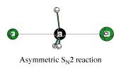

Improved geometry optimization¶
One of the strong points of the QUILD program [1-2] apart from its flexible setup of the multi-level approach, is its enhanced geometry optimization capabilities. These result in part from the use of adapted delocalized coordinates [41], a modification of the original delocalized coordinates setup [42], that enables the use on weak coordinates as well. Further enhancements are obtained through the use of regulated GDIIS [43-44], Restricted Second Order model (trust region) [45-46], and a model Hessian [41]. The latter includes the generation of a model Hessian for transition state searches by preparing the initial Hessian with the correct curvature and number of negative eigenvalues, which moreover correspond to the reaction coordinates (TSRC) for the transition state under study. The user has to specify on input what the relevant TSRC coordinates are, which will not only be used for the generation of the initial Hessian, but also to select the appropriate Hessian eigenvector when there are more (or less) than 1 negative Hessian eigenvalues.
The details of setting up the delocalized coordinates, its adaptation to facilitate the use on weak and strong coordinates, and their characteristics can be found in refs. [41] and [2]. Here we briefly mention the performance of the QUILD program for the Baker test set (a set with 30 organic molecules) and a test set with 18 weakly-bound molecules [2]. For the Baker set, we need 167 iterations to fully converge all molecules to a gradient of 3.0 10-4 a.u. at RHF/STO-3G (results obtained using the interface to ORCA), and 164 at PW91/TZ2P. For comparison, the old-style optimizer in ADF using Cartesians needed 222 iterations. For the weakly-bound set, we need 175 iterations to fully optimize the molecules to a gradient of 1.0 10-5 a.u. at PW91/TZ2P. Again for comparison, the old-style optimizer in ADF using Cartesians needed 748 iterations.
As an example, below is the relevant input for performing a transition state search for the bimolecular nucleophilic substitution reaction of fluoride on methyl chloride (see figure):
Geometry
TransitionState
End
QUILD
TSRC
dist 1 5
dist 1 6
SUBEND
END
ATOMS
C 0.000000 0.000000 0.000000
H -0.530807 0.919384693 0.112892
H -0.530807 -0.919384693 0.112892
H 1.061614 0.000000 0.112892
Cl 0.000000 0.000000 -2.124300
F 0.000000 0.000000 2.019100
END
Charge -1
INTEGRATION 6.0 6.0
SCF
converge 1.0e-6 1.0e-6
diis ok=0.01
iterations 99
END
The QUILD program will scan the input for the existence of a Geometry block (that indicates that QUILD should do an optimization), and will scan the Geometry block for the presence of the TransitionState keyword. If it is found, it will set the number of negative Hessian eigenvalues that are needed (nrnegneed) to 1, otherwise it will remain 0.
The QUILD block should in this case contain a TSRC subblock where the coordinates involved in the transition state are given. In the example above, there are two TSRC coordinates, the C-Cl and the C-F bond, as indicated by the atom numbers. For the construction of the initial Hessian, a negative force constant is assigned to these coordinates. For instance in the outputfile, first the definition is given for the primitive coordinates as they are constructed by the QUILD program (with the TSRC coordinates shown below in blue):
Number of MM coordinates (valence,intramol,intermol) : 32 ( 32, 0, 0)
--------------------------------------------------------------------------------
valence coordinates
--------------------------------------------------------------------------------
1 bnd 2 1 0 0 1 1.02076
2 bnd 3 1 0 0 1 1.02076
3 bnd 4 1 0 0 1 1.02076
4 bnd 5 1 0 0 1 0.50000
5 bnd 6 1 0 0 1 0.50000
6 ang 3 1 2 0 2 0.90892
7 ang 4 1 2 0 2 0.90892
etc.
Further down in the output, the force constants for the different MM coordinates are shown (with the ones for the TSRC coordinates given in blue):
Force Constants used:
bnd 1 0.40831 bnd 2 0.40831 bnd 3 0.40831 bnd 4 -0.03252
bnd 5 -0.02804 ang 6 0.20839 ang 7 0.20839 ang 8 0.20839
etc.
which are also coupled with each other:
Off-diagonal TSRC Hessian-element : 5 4 -0.04271 -0.02804 -0.03252
And finally, the contributions of the TSRC coordinates to the Hessian eigenvalues is reported:
Weight TSRC-coord 1 4 1.00000 Flindh 0.50000
Weight TSRC-coord 2 5 1.00000 Flindh 0.50000
Contributions of TSRC coordinates to negative Hessian eigenvalue 1 is 0.99996
Contribution from primitive 5 0.49998 Bnd F 6 C 1
Contribution from primitive 4 0.49998 Bnd CL 5 C 1
Contribution from primitive 17 0.00001 Imp H 3 C 1 H 4 H 2
Contribution from primitive 15 0.00001 Imp H 4 C 1 H 2 H 3
Contribution from primitive 16 0.00001 Imp H 4 C 1 H 3 H 2
Contributions of TSRC coordinates to all Hessian eigenvalues:
Eigval 1 -0.07305 Contrib_All 0.99996 per_tsrc 0.49998 0.49998
Eigval 2 0.01248 Contrib_All 0.93816 per_tsrc 0.46908 0.46908
As a result, the optimization converges within 10 cycles:
QUILD summary for sn2_ts_orig.out
Stp# Energy Gmax,adf Grms,adf Gmax,deloc. Grms,deloc. Symm #negH
(kcal/mol) (a.u.) (a.u.) (a.u.) (a.u.)
=======================================================================================
1 -620.9561 0.007101756 0.003028991 0.011855992 0.003715738 C(3V) 1
2 -620.8929 0.023635611 0.007391899 0.013690739 0.005638699 C(3V) 1
3 -621.2068 0.016710875 0.005351311 0.026217447 0.007807519 C(3V) 1
4 -620.8176 0.004699225 0.001709580 0.011879183 0.003484516 C(3V) 1
5 -620.3782 0.008811234 0.002829390 0.018504386 0.005671159 C(3V) 1
6 -620.8564 0.001689444 0.000533251 0.002432001 0.001015262 C(3V) 1
7 -620.9381 0.002213820 0.000584005 0.000987755 0.000448095 C(3V) 1
8 -620.8942 0.000576597 0.000161025 0.000424960 0.000141833 C(3V) 1
9 -620.8840 0.000112994 0.000037557 0.000241219 0.000074629 C(3V) 1
10 -620.8831 0.000010191 0.000003368 0.000021158 0.000006610 C(3V) 1
+++++++++++++++++++++++++++++++++++++++++++++++++++++++++++++++++++++++++++++++++++++++
Geometry CONVERGED !!!
Energy at optimized geometry : -620.8831 (kcal/mol)
+++++++++++++++++++++++++++++++++++++++++++++++++++++++++++++++++++++++++++++++++++++++
Additionally, the QUILD optimizer allows to constrain bonds, angles or dihedrals during the optimization, in which it uses the method by Baker [47]. This method has the nice feature that the constraints do not have to be met in the initial geometry, but are enforced through the use of Lagrangian multipliers. The ability of adding constraints has been extended to perform a LinearTransit, i.e. a series of constrained optimizations, that can be used to scan a potential energy surface as function of e.g. a bond. For the SN 2 reaction shown above, the relevant input to do a LinearTransit would be:
QUILD
nrlt 11
CONSTR
dist 1 6 2.5 1.5
SUBEND
END
This means that the C-F distance is reduced (while constrained) in 11 steps, starting from 2.5 Å and going to 1.5 Å, in steps of 0.1 Å. All other coordinates are free to optimize in this example, however a combination of more than one constrained coordinates is possible; either by including them also as LT coordinate, or simply as constraint.